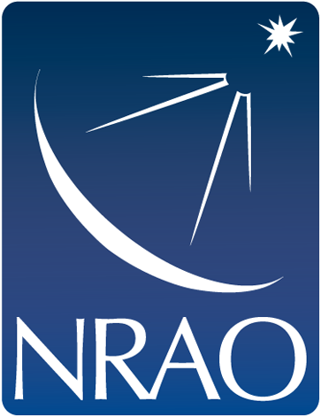

<header class="container-fluid">
  <div class="row align-items-end">
    <div class="col-md-6 col-9">
      <h1 class="pt-2"><span></span><b>NRAO</b> <br/> Archive Access</h1>
    </div><!--// col -->
    <div class="col-md-6 col-3 text-right pb-3">
      <button type="button" class="btn btn-light d-md-none" (click)="showNav = !showNav"><i class="fas fa-bars"></i></button>
    </div>
  </div><!-- // row -->
  <nav id="tool_nav" class="row text-center" *ngIf="showNav" @vslider>
    <a href="#" class="col-md"><i class="fas fa-home"></i> Home</a>
    <a href="#" class="col-md"><i class="fas fa-link"></i> Legacy Archive</a>
    <a href="#" class="col-md"><i class="fas fa-file-alt"></i> About</a>
    <a href="#" class="col-md"><i class="fas fa-bullhorn"></i> Feedback</a>
    <a href="#" class="col-md"><i class="fas fa-sign-in-alt"></i> Log In</a>
  </nav>
</header>

<div class="container-fluid">
  <form class="row bg-light border-bottom">
    <div class="form-group col-12 pt-4 pb-2 px-5">
      <div class="input-group">
        <label for="search" class="sr-only">Search</label>
        <div class="input-group-prepend">
          <div class="input-group-text rounded-left"><i class="fas fa-search"></i></div>
        </div>
        <input type="text" name="search" class="form-control form-control-lg" id="search"
               placeholder="Search for Project Code, Title, Abstract, PI Name, or File Name">
      </div>
    </div>
  </form><!-- // row -->

  <div class="row">
    <div class="bg-light border-right col-12" [ngClass]="showFilterList ? 'col-md-3' : 'col-md-auto'">
      <div class="row py-2 align-items-baseline">
        <div class="col text-uppercase" [ngClass]="showFilterList ? 'col' : 'd-md-none'">
          <p class="m-0">Filters</p>
        </div>
        <div class="col-auto">
          <!-- fontawesome replaces the <i> tag with an svg for the icon, so we can't show/hide on the <i>
          so we need to include both state buttons and show/hide them based on isCollapsed
          in this case, because on mobile screens we need up/down instead of right/left, we need 4 buttons-->
          <button type="button" class="btn btn-primary btn-sm d-md-none" *ngIf="showFilterList" (click)="showFilterList = !showFilterList"><i class="fas fa-chevron-up"></i></button>
          <button type="button" class="btn btn-primary btn-sm d-md-none" *ngIf="!showFilterList" (click)="showFilterList = !showFilterList"><i class="fas fa-chevron-down"></i></button>
          <button type="button" class="btn btn-primary btn-sm d-none d-md-inline-block" *ngIf="showFilterList" (click)="showFilterList = !showFilterList"><i class="fas fa-chevron-left"></i></button>
          <button type="button" class="btn btn-primary btn-sm d-none d-md-inline-block" *ngIf="!showFilterList" (click)="showFilterList = !showFilterList"><i class="fas fa-chevron-right"></i></button>
        </div>
      </div>
      <app-filters *ngIf="showFilterList"></app-filters>
    </div><!--// col -->

    <div [ngClass]="showFilterList ? 'col-md-9' : 'col'">
      <app-results></app-results>
    </div><!--// col -->
  </div><!-- // row -->
</div><!-- // container -->

<footer class="container-fluid border-top bg-light" style="box-shadow: inset 0 100px 100px -100px rgba(0,0,0,0.3);">
  <div class="row p-5">
    <div class="col-12 col-md-3">
      <div class="row align-items-center">
        <div class="col-3">
          
        </div>
        <div class="col-4">
          
        </div>
        <div class="col-5 pl-0">
          
        </div>
      </div><!--//row -->
    </div><!--// col -->
    <div class="col-12 col-md-9">
      <p>
        <a href="" class="btn btn-link">Staff</a>
        <a href="" class="btn btn-link">Policies</a>
        <a href="" class="btn btn-link">Diversity</a>
      </p>
      <p class="small text-muted ml-2">The National Radio Astronomy Observatory is a facility of the National Science Foundation operated under cooperative agreement by Associated Universities, Inc.</p>
    </div>
  </div>
</footer>
